Dust3D automates the tedious parts of 3D character creation — UV unwrapping, rigging, and animation. Sketch a skeleton on a 2D canvas, get a mesh in real time, assign bone names, tune animation parameters, and export.
dust3d.exe. If Windows SmartScreen warns you, click More info → Run anyway.chmod +x dust3d-*.AppImage
./dust3d-*.AppImageIf it fails, install FUSE: sudo apt-get install libfuse2
Once Dust3D is running, try the example .ds3 models to get started quickly — open any file via File → Open.